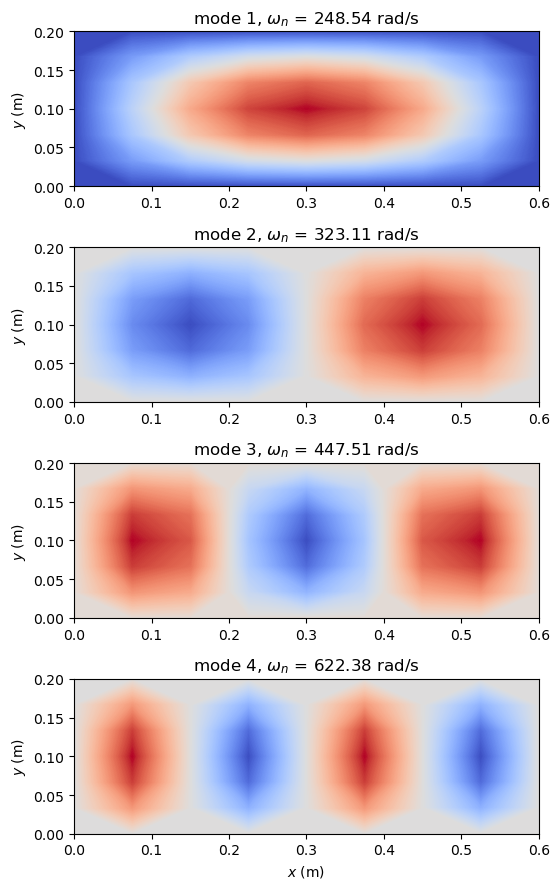

Natural frequencies#
The first natural angular frequencies and modes of a simply supported rectangular isotropic plate. The stiffness and mass matrices are assembled with update_KC0 and update_M, the generalized eigenvalue problem is solved with the dense scipy.linalg.eigh, and the frequencies are compared with the closed-form natural angular frequencies of the classical plate theory [1]. The same model is checked in tests/test_natural_frequency.py.
Units: N, m, kg, Pa, rad/s.
[1]:
%matplotlib inline
import numpy as np
from scipy.sparse import coo_matrix
from scipy.linalg import eigh
import matplotlib.pyplot as plt
from composites import isotropic_plate
from structsolve import freq
from bfscplate2d import (BFSCPlate2D, update_KC0, update_M, DOF, KC0_SPARSE_SIZE,
M_SPARSE_SIZE, DOUBLE, INT)
from bfscplate2d.quadrature import get_points_weights
Theory#
The kinetic energy and the linear strain energy give the equations of free vibration \(\boldsymbol{M}\ddot{\boldsymbol{u}} + \boldsymbol{K}_{C0}\boldsymbol{u} = \boldsymbol{0}\), whose harmonic solutions \(\boldsymbol{u} = \boldsymbol{\phi} \sin \omega_n t\) satisfy the generalized eigenvalue problem
with the natural angular frequencies \(\omega_n\), in rad/s, and the modes \(\boldsymbol{\phi}\). Both matrices are symmetric and positive definite once the rigid-body motions are constrained.
For the simply supported plate, the mode \(w = \sin(m \pi x/a) \sin(n \pi y/b)\) satisfies the equation of motion \(D \nabla^4 w = \rho h \omega^2 w\) of the classical plate theory, with the rotary inertia neglected [1], for
Model#
The plate of \(a = 0.6\) m by \(b = 0.2\) m, thickness \(h = 1\) mm, \(E = 70\) GPa, \(\nu = 0.3\) and \(\rho = 7800\) kg/m\(^3\), is meshed with 9 by 7 nodes. The mass matrix of update_M requires the thickness h and the density rho of each element and no integration points.
[2]:
nx = 9 # along x
ny = 7 # along y
points, weights = get_points_weights(nint=4)
a = 0.6
b = 0.2
E = 70e9
nu = 0.3
rho = 7.8e3
h = 0.001
lam = isotropic_plate(thickness=h, E=E, nu=nu, rho=rho)
xtmp = np.linspace(0, a, nx)
ytmp = np.linspace(0, b, ny)
xmesh, ymesh = np.meshgrid(xtmp, ytmp)
# node coordinates and position in the global matrix
ncoords = np.vstack((xmesh.T.flatten(), ymesh.T.flatten())).T
x = ncoords[:, 0]
y = ncoords[:, 1]
nids = 1 + np.arange(ncoords.shape[0])
nid_pos = dict(zip(nids, np.arange(len(nids))))
nids_mesh = nids.reshape(nx, ny)
n1s = nids_mesh[:-1, :-1].flatten()
n2s = nids_mesh[1:, :-1].flatten()
n3s = nids_mesh[1:, 1:].flatten()
n4s = nids_mesh[:-1, 1:].flatten()
num_elements = len(n1s)
print('num_elements', num_elements)
N = DOF*nx*ny
Kr = np.zeros(KC0_SPARSE_SIZE*num_elements, dtype=INT)
Kc = np.zeros(KC0_SPARSE_SIZE*num_elements, dtype=INT)
Kv = np.zeros(KC0_SPARSE_SIZE*num_elements, dtype=DOUBLE)
Mr = np.zeros(M_SPARSE_SIZE*num_elements, dtype=INT)
Mc = np.zeros(M_SPARSE_SIZE*num_elements, dtype=INT)
Mv = np.zeros(M_SPARSE_SIZE*num_elements, dtype=DOUBLE)
init_k_KC0 = 0
init_k_M = 0
for n1, n2, n3, n4 in zip(n1s, n2s, n3s, n4s):
plate = BFSCPlate2D()
plate.c1 = DOF*nid_pos[n1]
plate.c2 = DOF*nid_pos[n2]
plate.c3 = DOF*nid_pos[n3]
plate.c4 = DOF*nid_pos[n4]
plate.ABD = lam.ABD
plate.h = h
plate.rho = rho
plate.lex = a/(nx - 1)
plate.ley = b/(ny - 1)
plate.init_k_KC0 = init_k_KC0
plate.init_k_M = init_k_M
update_KC0(plate, points, weights, Kr, Kc, Kv)
update_M(plate, Mr, Mc, Mv)
init_k_KC0 += KC0_SPARSE_SIZE
init_k_M += M_SPARSE_SIZE
KC0 = coo_matrix((Kv, (Kr, Kc)), shape=(N, N)).tocsc()
M = coo_matrix((Mv, (Mr, Mc)), shape=(N, N)).tocsc()
num_elements 48
Boundary conditions#
Each node has the degrees of freedom \(u\), \(u_{,x}\), \(u_{,y}\), \(v\), \(v_{,x}\), \(v_{,y}\), \(w\), \(w_{,x}\), \(w_{,y}\), \(w_{,xy}\), at the positions 0 to 9 of DOF = 10. Along an edge \(x\) = constant the interpolated \(w\) depends only on \(w\) and \(w_{,y}\) at the two nodes of the edge, so \(w = 0\) on the whole edge needs both nodal values constrained (\(w\) and \(w_{,x}\) on an edge \(y\) = constant); the
normal slope and \(w_{,xy}\) stay free, which gives the simply supported plate. \(u\) at \(x = 0\) and \(v\) at \(y = 0\) remove the in-plane rigid-body motions.
[3]:
bk = np.zeros(KC0.shape[0], dtype=bool)
# simply supported: w and its derivative along the edge
edges_x = np.isclose(x, 0.) | np.isclose(x, a)
edges_y = np.isclose(y, 0.) | np.isclose(y, b)
bk[6::DOF] = edges_x | edges_y
bk[8::DOF] = edges_x
bk[7::DOF] = edges_y
# u at x = 0 and v at y = 0
bk[0::DOF] = np.isclose(x, 0.)
bk[3::DOF] = np.isclose(y, 0.)
bu = ~bk
Kuu = KC0[bu, :][:, bu]
Muu = M[bu, :][:, bu]
print('unknown degrees of freedom', bu.sum())
unknown degrees of freedom 554
Eigenvalue problem#
The first four eigenpairs of the dense symmetric pencil; the modes are expanded back to all degrees of freedom. The same frequencies are computed with the sparse solver structsolve.freq, which returns the eigenvalues \(-\omega_n^2\).
[4]:
num_eigenvalues = 4
eigvals, eigvecsu = eigh(a=Kuu.toarray(), b=Muu.toarray(),
subset_by_index=(0, num_eigenvalues-1))
eigvecs = np.zeros((KC0.shape[0], num_eigenvalues), dtype=float)
eigvecs[bu, :] = eigvecsu
omegan = eigvals**0.5
print('omega_n (rad/s)', omegan)
lambda2, _ = freq(Kuu, Muu, num_eigvalues=num_eigenvalues, symmetric=True,
silent=True)
omegan_ss = (-lambda2)**0.5
print('structsolve.freq omega_n (rad/s)', omegan_ss)
print('max relative difference', np.max(np.abs(omegan_ss - omegan)/omegan))
omega_n (rad/s) [248.54269514 323.10727058 447.51204122 622.3822434 ]
structsolve.freq omega_n (rad/s) [248.54269504 323.10727057 447.51204113 622.38224336]
max relative difference 3.937425270493188e-10
Comparison with the closed form#
Since \(a = 3b\), the lowest frequencies are those of the modes with one half-wave along \(y\), \((m, n) = (1, 1)\) to \((4, 1)\). The number of half-waves of each computed mode along \(x\) is counted from the sign changes of \(w\) along the nodal line \(y = b/2\).
[5]:
D = E*h**3/(12*(1 - nu**2))
w_mid = eigvecs[6::DOF, :].reshape(nx, ny, num_eigenvalues)[:, ny//2, :]
print('%4s %7s %14s %14s %10s' % ('mode', '(m, n)', 'omega_n',
'omega_mn', 'diff (%)'))
for i in range(num_eigenvalues):
wi = w_mid[1:-1, i]
m = 1 + np.sum(np.sign(wi[1:]) != np.sign(wi[:-1]))
n = 1
omega_mn = np.pi**2*(m**2/a**2 + n**2/b**2)*np.sqrt(D/(rho*h))
print('%4d %7s %14.4f %14.4f %+10.4f' % (i + 1, '(%d, %d)' % (m, n),
omegan[i], omega_mn, 100*(omegan[i] - omega_mn)/omega_mn))
mode (m, n) omega_n omega_mn diff (%)
1 (1, 1) 248.5427 248.5350 +0.0031
2 (2, 1) 323.1073 323.0956 +0.0036
3 (3, 1) 447.5120 447.3631 +0.0333
4 (4, 1) 622.3822 621.3376 +0.1681
The first four modes are \((m, n) = (1, 1)\) to \((4, 1)\), with natural angular frequencies 0.0031 %, 0.0036 %, 0.033 % and 0.17 % above \(\omega_{mn}\); the difference grows with \(m\), as the 8 elements along \(x\) describe each half-wave with fewer elements. structsolve.freq gives the same frequencies within a relative difference of \(4 \times 10^{-10}\).
Modes#
The deflection \(w\) of the first four modes, at the nodes:
[6]:
fig, axes = plt.subplots(num_eigenvalues, 1, figsize=(7, 9))
for i, ax in enumerate(axes):
wplot = eigvecs[6::DOF, i].reshape(nx, ny).T
ax.set_aspect('equal')
levels = np.linspace(wplot.min(), wplot.max(), 300)
ax.contourf(xmesh, ymesh, wplot, levels=levels, cmap='coolwarm')
ax.set_title(r'mode %d, $\omega_n$ = %.2f rad/s' % (i + 1, omegan[i]))
ax.set_ylabel('$y$ (m)')
axes[-1].set_xlabel('$x$ (m)')
fig.tight_layout()
plt.show()

References#
Leissa, A. W., Vibration of Plates, NASA SP-160, 1969.